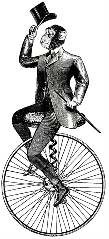

COMPORTEMENT
(trouble)
"Quand un comportement entre en conflit avec une valeur essentielle, c'est généralement le comportement qui change." M. ROKEACH
T.C.A, T.O.C, TIC, T.D.A(H) ...
Vérifier, grignoter, tapoter, ronger, éviter, mâchouiller, répéter, s'obnubiler, se remplir, s'épuiser, se vider, se sentir être compulsif, incontrôlable ... Tout cela passe bien souvent par un comportement spécifique. Celui-ci est stigmatisé et incriminé comme étant la cause ou les conséquences d'un trouble. Pourtant, il peut se voir comme le dernier élément d'un processus d'expression qui fait office de réponse à une suggestion intérieure.
On peut définir le comportement comme étant la manière d'agir, la façon de se conduire dans la vie, et le comportement peut, un moment donné, être troublé. Ce trouble peut être d'ordre quantitatif ou qualitatif. Du côté quantitatif, le comportement peut être en excès ou en défaut. Un comportement en excès va créer de l'agitation, de l'instabilité, de l'agressivité, du bruit, de l'hyperactivité ou encore de la compulsivité. Et c'est souvent dans ce sens restreint que l'on utilise ce terme de trouble du comportement ; quelqu'un qui est agité va déranger : il va falloir le calmer. On oublie trop souvent qu'un comportement par défaut est tout aussi problématique. Quelqu'un qui ne parle pas, qui ne bouge pas, qui se fait oublier, qui est inhibé est tout autant en souffrance que l'agité mais il ne dérange pas. Le trouble du comportement peut être également qualitatif : Il s'agit alors d'une déviation, d'une inadaptation, d'une inadéquation à la réalité, d'une bizarrerie, par exemple : les perversions, le délire, la fabulation, les troubles obsessionnels compulsifs, les troubles des conduites alimentaires introduisent des comportements inadaptés, inappropriés.
Les troubles du comportement sont donc des pathologies de l'acte. L'action vient prendre la place d'une pensée ou d'une parole ou plutôt c'est parce que la pensée et la parole ne sont pas suffisamment développées que le moyen d'expression favori est l'acte. Et l'acte a volontiers un caractère immédiat, automatique, opératoire, non élaboré. Il faut bien différencier l'action, qui est le résultat d'une réflexion, d'une élaboration, et le passage à l'acte (réaction) qui vient court-circuiter la pensée et la parole avec une dimension pulsionnelle.
Vérifier, grignoter, tapoter, ronger, éviter, mâchouiller, répéter, s'obnubiler, se remplir, s'épuiser, se vider, se sentir être compulsif, incontrôlable ... Tout cela passe bien souvent par un comportement spécifique. Celui-ci est stigmatisé et incriminé comme étant la cause ou les conséquences d'un trouble. Pourtant, il peut se voir comme le dernier élément d'un processus d'expression qui fait office de réponse à une suggestion intérieure.
On peut définir le comportement comme étant la manière d'agir, la façon de se conduire dans la vie, et le comportement peut, un moment donné, être troublé. Ce trouble peut être d'ordre quantitatif ou qualitatif. Du côté quantitatif, le comportement peut être en excès ou en défaut. Un comportement en excès va créer de l'agitation, de l'instabilité, de l'agressivité, du bruit, de l'hyperactivité ou encore de la compulsivité. Et c'est souvent dans ce sens restreint que l'on utilise ce terme de trouble du comportement ; quelqu'un qui est agité va déranger : il va falloir le calmer. On oublie trop souvent qu'un comportement par défaut est tout aussi problématique. Quelqu'un qui ne parle pas, qui ne bouge pas, qui se fait oublier, qui est inhibé est tout autant en souffrance que l'agité mais il ne dérange pas. Le trouble du comportement peut être également qualitatif : Il s'agit alors d'une déviation, d'une inadaptation, d'une inadéquation à la réalité, d'une bizarrerie, par exemple : les perversions, le délire, la fabulation, les troubles obsessionnels compulsifs, les troubles des conduites alimentaires introduisent des comportements inadaptés, inappropriés.
Les troubles du comportement sont donc des pathologies de l'acte. L'action vient prendre la place d'une pensée ou d'une parole ou plutôt c'est parce que la pensée et la parole ne sont pas suffisamment développées que le moyen d'expression favori est l'acte. Et l'acte a volontiers un caractère immédiat, automatique, opératoire, non élaboré. Il faut bien différencier l'action, qui est le résultat d'une réflexion, d'une élaboration, et le passage à l'acte (réaction) qui vient court-circuiter la pensée et la parole avec une dimension pulsionnelle.

Le comportement déviant peut alors être considéré comme une intention positive, certes non adaptée, mais du fait d'une lacune propositionnelle qu'offre le conscient, l'inconscient n'a pas mieux à suggérer que l'agir critiqué. Et parfois, cette expression inconsciente peut s'appuyer sur ces outils cognitivo-comportementaux qui lui appartient et qui est la compulsion et l'obsession. Si on s'appuie ici sur le regard Freudien, la répétition serait le moyen inconscient de retrouver la jouissance de l'acte originel : la satisfaction. La compulsion en serait la dimension pathologique marquant une dynamique traumatique dans l'acte originel et ou la jouissance se place. Pour l'obsession, le mot est emprunté au latin obsessio qui signifie l’action d’assiéger, le blocus. L’esprit est comme assiégé par des pensées, des images, des doutes ou des craintes qui paralysent le fonctionnement psychique.
Ici, ces conduites sont vues comme un mouvement actif de l'inconscient qui se veut observable et mesurable pour relater conflits et mésententes intérieurs et la compulsivité, l'évitement, le trop ou le pas assez sont alors entendus comme étant la résultante d'un agir qui exprime jusqu'ici une absence de résolution d'un blocage psychique probable.
L'hypnose favorise un déconditionnement, un désancrage sans rentrer dans l'histoire du sujet. L'objectif est de trouver un terrain d'entente, une trève ou encore une résolution ou une autorisation afin de libérer ce schéma comportemental freinant.
Ici, ces conduites sont vues comme un mouvement actif de l'inconscient qui se veut observable et mesurable pour relater conflits et mésententes intérieurs et la compulsivité, l'évitement, le trop ou le pas assez sont alors entendus comme étant la résultante d'un agir qui exprime jusqu'ici une absence de résolution d'un blocage psychique probable.
L'hypnose favorise un déconditionnement, un désancrage sans rentrer dans l'histoire du sujet. L'objectif est de trouver un terrain d'entente, une trève ou encore une résolution ou une autorisation afin de libérer ce schéma comportemental freinant.

EN RELATION

DEPENDANCE
SOMMEIL
DEFENSE
ANXIETE
EMOTION
CONDUITES
FRUSTRATION
ALIMENTAIRES